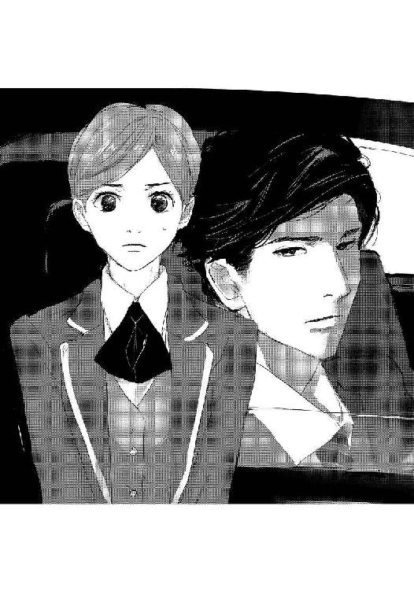
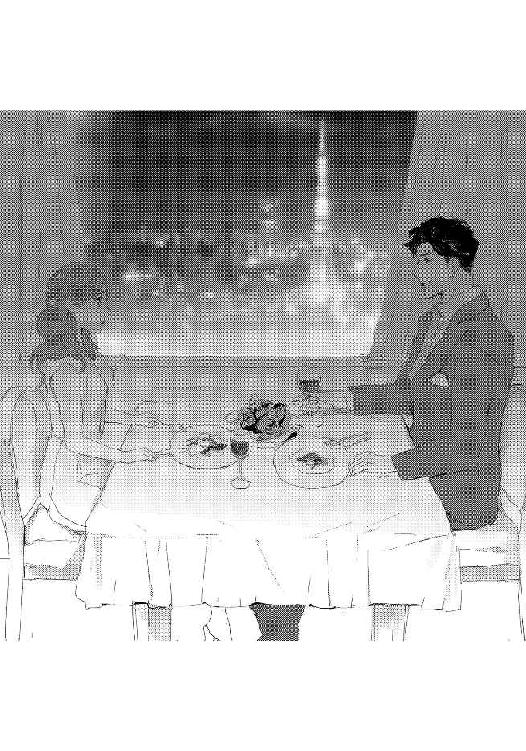
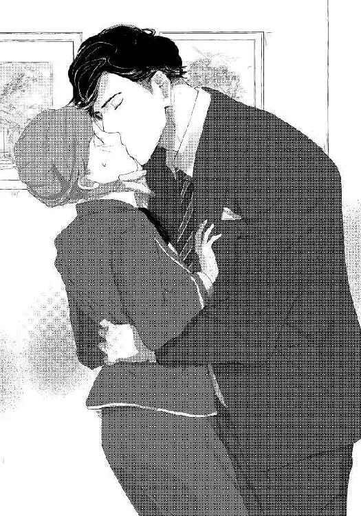

| 魅惑の若手社長と極上恋愛【イラスト入り】 (無敵恋愛S*girl) | |
| 一文字鈴 | |
| 株式会社 ぶんか社 (2018) | |
株式会社 ぶんか社
魅惑の若手社長と極上恋愛
一文字鈴・著
三ヨシ・イラスト
※本作品の内容はすべてフィクションです。
実在の人物・団体・事件などには一切関係ありません。
「またのご利用をお待ちしています。ありがとうございました！」
おなかに力を入れて声を出し、志穂は深々と頭を下げて、ホテルを出る客を見送った。
「志穂さん、すっかりフロント業務に慣れたね。アルバイト採用なのがもったいないなぁ」
フロントの男性社員である橘チーフが、志穂を見てにっこり笑った。
二十五歳の彼は志穂より四つ年上だが、目尻が下がった童顔で、実際より若く見られがちだ。
都内の高級ホテル『ホテルヒシカワ』──。
真紅の絨毯が敷かれ、高い天井にはイタリア製のシャンデリアが煌めいている華やかなエントランスホールで、志穂はフロントアシスタントを担当している。
「ロビーの見回りに行ってきます」
チェックアウト業務が落ち着き、ロビーに出た志穂は、腰をかばいながら正面玄関へ歩いていく老婦人に気づいた。
「......失礼します。お客様、よろしければタクシーをお呼びしましょうか？」
志穂が声をかけると、老婦人は振り返り、目尻に皺を寄せて微笑んだ。
「夫が車で迎えにくるので、大丈夫です」
しかし、正面に黒塗りの高級車が停まっている。あれでは老婦人を迎えにきた車が車寄せに入れない。
「ソファで少々お待ちください」
そう老婦人に断り、志穂はフロントに戻って、橘チーフに小声で尋ねた。
「あの車、長く停車してるんでしょうか？」
「ん？ あぁ、そう言えば長いなぁ」
そうつぶやいてガラス扉の向こうを確認した彼が、ぎょっと目を見開いた。
「あの車に乗ってる人、このホテルの菱川社長だ」
「えっ......？」
志穂がここでアルバイトを始めて半年ほど経つが、採用面接は人事部長が担当したし、仕事上でも会うことがなかったので、社長については名前しか知らなかった。
様子を見ていると、菱川社長は運転席で何やらメモを取ったり電話をかけたりして、車を動かす気配はない。
「困りましたね」
「まあ、そのうち、退けてくださるだろう」
のんきな橘チーフの声に、志穂はぐっと拳を握りしめる。
「私、直接頼んできます」
「えっ、ちょ、ちょっと待って、志穂さん。社長にそんな......」
背後から橘チーフの動揺した声が聞こえたが、志穂は振り返らずに勢いよくガラス扉を出て、菱川社長の車へ近づいた。
すぅっと息を吸って、コン、コンと運転席の窓を叩く。
運転席の窓ガラスが下がり、驚くほど整った顔立ちの男性が、不機嫌そうに志穂を見た。
「なんだ？」
彼の射抜くような鋭い眼差しは、人を圧する迫力があり、思わずびくっと肩が揺れる。
（ま、負けないんだから）
志穂はキッと菱川社長を睨み返した。

「申し訳ありません、私、フロントアシスタントの佐伯志穂と申します。長く停車するのでしたら、いったん駐車場へ移動してもらえますか？ 車寄せに入れずに困っているお客様がいらっしゃいますので」
菱川社長はハッと切れ長の目を見開いた。
「......わかった。すぐに退ける」
志穂が車から離れると、すぐに車は動き出した。
フロントに戻ると、橘チーフがほっと安堵し、目を細めて志穂に話しかける。
「社長に注意するなんて、まったく、志穂さんには驚かされるよ」
「ご心配をおかけして、すみませんでした」
志穂が教育係でもある橘チーフにぺこりと頭を下げると、彼は顔の前で手を振り、苦笑した。
「まあ、ともかくあの老婦人が無事にご家族の車に乗ることができてよかった」
頷いた志穂の脳裏に、ふと、先ほど見た菱川社長の鋭い眼差しがよみがえる。
客室予約表を開いた志穂の動きが止まるのを見て、橘チーフがくすっと笑った。
「志穂さんも菱川社長に惚れたくちかな？ すごい美形だから、僕も初めてお会いした時は驚いたよ。彼は二年前に社長業を引き継いだ頃から、ホテルのスタッフからお客様、それに取引先からも、女性に大人気なんだ」
どうやら橘チーフは、志穂が菱川社長の美貌を思い出してぼうっとしていると思ったらしい。
確かに、今まで見た誰より、菱川社長は整った顔立ちをしていたが、志穂は男性に興味がなかった。
（今は仕事を頑張って、それから父のことを考えないと）
入院中の父を思い出し、きゅっと唇を噛みしめる。
ロビーの見回りに行く時間になると橘チーフにその旨を伝えて、志穂はフロントを出た。
女性社員のひとりが、目ざとく志穂を見つけ、駆け寄ってくる。
「ちょっと、佐伯さん、話があるの」
「......はい。なんですか？」
顔を上げると、仕事中に無駄話が多いことで有名な女性社員二人が、腰に手を当てて立っていた。ベルガールのくせに、重い荷物を持った老婦人に声さえかけなかった二人だ。
「見たわよ。あなた、菱川社長に注意したでしょう？ アルバイトのくせに生意気だわ」
「少しばかり仕事ができるからって、いい気にならないで。あたしたち社員にもっと敬意を表しなさいよ。あなた、大学中退でしょ？ 常識がないわけよね」
志穂が黙っているのをいいことに、彼女たちは顔を歪め、言いたい放題に志穂を批判しはじめる。
「......」
志穂は二人の顔を交互に見て、小さくため息をつくと、深呼吸をして鋭い眼差しで睨み返した。
黙っていたのは、別に彼女たちを怖がっているからではなく、あきれていたからだ。
志穂は二人に向かって言った。
「ご自分のお仕事を放っておいて、敬意を表せと言うのはおかしいと思います。お話はそれだけでしたら、仕事がありますので」
「何よ、その態度は。アルバイトの分際でっ」
女子社員二人はさらに腹を立て、志穂の肩を掴んできた。
もう一人が手を振り上げ、志穂を叩こうとした瞬間、突然ロビーに低い声が響く。
「──なんの騒ぎだ！」
女子社員二人がぎょっとなった。
「ひ、菱川社長！」
振り返ると、長身にスーツをまとった菱川社長がいつの間にか近くまで来ていた。
彼は青ざめる女子社員二人に冷たい眼差しを向け、厳しい口調で尋ねる。
「今、何をしようとしていた？」
怒気を含んだ低い声に、女子社員たちは視線を揺らして黙っている。
「社員もアルバイトもわがホテルの大切なスタッフであることに変わりはない。それなのに、ずいぶんひどいことを言っていたな」
話を聞かれていたことに、二人は青ざめた。
「今後、こういうことがないようにフロントマネージャーに報告しておく。持ち場へ帰りなさい」
言葉を失くした女性社員二人が、泣きそうな顔で仕事へ戻っていくと、菱川社長が志穂へ視線を向けた。
助けてもらった礼を言おうと思っていた志穂は、その熱を帯びた切れ長の瞳に思わず身構える。
志穂を見つめ、菱川社長が冷やかに言った。
「さっき俺に注意したのは君だな。話がある」
志穂の頭の中で、「さっき」が「殺気」に、「話がある」が「ふざけるなバカ野郎」に変換される。
美形が無表情で睨むと、それだけで驚くほど迫力があり、志穂はこくりと喉を鳴らした。
「あの、お話というのは......どういった......」
「仕事が終わったら、社長室へ来てくれ。いいね？」
有無を言わさない強い口調と眼差しに、志穂が表情を強張らせて頷くと、彼はロビーを足早に立ち去った。
志穂は仕事が終わると、胃薬を飲んで、社長室へ向かった。
初めて足を踏み入れる管理職のフロアを真っ直ぐ歩き、社長室の重厚な扉をノックする。
「どうぞ」
おずおずと扉を開けると、大きなデスクで書類を見ていた菱川社長がすっと立ち上がり、志穂の前まで歩いてきた。
「先ほど、車を動かせと君が言った件だが」
「......はい」
向かい合うように立つ彼は見上げるほど背が高い。
ぐっと唇を噛みしめて見上げると、彼は真剣な表情で口を開いた。
「注意してくれてありがとう」
「......え？」
叱られるのではと思っていた志穂は、社長から礼を言われた上に、深いお辞儀をされて、両目を大きく見開いた。
（社長が、アルバイトの私にお礼を......）
一瞬、志穂は呆然となり、頭を下げたままの彼にあわてて声をかける。
「いいえ、そんな......。顔を上げてください。お願いします」
志穂の懇願に、彼はゆっくりと顔を上げた。
「......気づかせてくれたお礼に、できれば夕食をごちそうしたいと思っている」
「夕食？ いいえ、そんなわけにはいきません」
恐縮する志穂を見つめ、彼は眉根を寄せた。
「俺に注意してくれる人は少ない。だから、お礼の気持ちを形にしたい」
「お気持ちだけで、結構です」
志穂がはっきり断ると、菱川社長が不機嫌な顔になった。
すねたような子供っぽい表情は、優秀な大手ホテル社長とは別人のようだ。
「......俺は一人暮らしだから、夕食を一緒に食べてくれるとうれしい。それに一度だけだ」
怒ったような口調でつぶやく彼に、思わず笑みがこぼれ、胸の奥がふいに熱くなる。
断るのはかえって失礼だと感じ、頷いた。
「わかりました。それでは一度だけ......」
志穂がそう答えると、彼はほっとしたように「よかった」と言って微笑んだ。
（あ、笑った......）
端整な顔立ちの彼が初めて見せた笑顔がとても素敵で、トクトクと心臓が鼓動を速め、うれしいような、くすぐったいような気持ちになる。
「今日は会議があるが、明日なら大丈夫だ。君の予定は？」
「すみません。明日はちょっと用があって。明後日なら大丈夫です」
明日は入院している父のお見舞いに行くと約束していた。
「わかった。明後日、仕事が終わったら俺にメールしてくれ。連絡先を交換しておこう」
志穂が口を挟む間もなく、連絡先を交換させられた。
「これでいい。楽しみにしている」
本当にうれしそうに微笑んだ菱川社長につられるように、志穂も「よろしくお願いします」と笑顔でお辞儀をして、そのまま社長室を辞した。
約束の日は、あいにく朝から雨が降っていた。
橘チーフが志穂を見て小首を傾げる。
「雨なのに、志穂さん、なんだかウキウキしているね。何かいいことがあるのかい？」
「いいえ、別に......」
（私、そんなにうれしそうな顔をしている？）
浮かれているつもりはなかったのにと思いながら、志穂はコツンと自分にゲンコツを落とすと、集中してフロント業務を頑張った。
「──お先に失礼します」
仕事が終わり、橘チーフやフロントのスタッフに挨拶をして、スタッフルームに入った。
スマホを確認すると、菱川社長からメールが届いている。
『職員用駐車場で待ち合わせよう』という短い内容に『わかりました』と返事を返す。
社長を待たせないように、急いで制服から私服へ着替える。今日は持っている服の中で一番気に入っている、水色のワンピースだ。
ホテルの従業員用出口を出たところで、傘を忘れたことに気づいたが、小雨だったのでそのまま走った。
地下駐車場の入口に入ると、すでに菱川社長が立って待っていた。
彼は雨の中を全速力で走ってきた志穂を見て、驚いている。
「お待たせして、すみませんでした」
あわてて頭を下げると、彼は表情を和らげた。
「いや、俺も今来たところだ。......風邪をひくといけない」
低くつぶやき、菱川社長がハンカチを差し出した。
「ありがとうございます。でも、自分のハンカチがありますので」
バッグからハンカチを出して、濡れた腕を押さえていると、菱川社長が志穂の頭を自分のハンカチで優しく拭き始めた。
突然のことに驚いて、体がびくっとなる。
「あの......すみません。大丈夫です」
恐縮すると、彼は「そうか」と言って小さく笑った。
「......それじゃあ、行こうか。ホテル内のレストランは知り合いが多くて落ち着かないから、少し離れた場所にあるフレンチの店に予約を入れている」
彼は黒色の高級車の助手席に志穂を乗せると、ゆっくりとアクセルを踏み、車を走らせる。
レザーシートに背を預け、ハンドルを切る菱川社長の横顔が凛々しく、運転する姿がとても男らしくて絵になる。
彼から目が離せなくなった志穂は、そんな自分に戸惑いながら話しかけた。
「あの、菱川社長」
「うん？ 仕事中じゃないから、役職名ではなく、普通に名前で呼んでくれないか」
名前で呼ぶように言われて、トクンと小さく胸の鼓動が跳ねる。
「では......菱川さん。ご自分で車の運転をなさるんですね」
「ああ、運転が好きで、プライベートでもよくドライブに行っている」
そう言った彼は、信号で止まると、志穂に優しい微笑みを向けた。
（もっと偉そうな感じの人だと思っていた）
多くを語るタイプではないが、彼の口調は穏やかで、とても話しやすい。
何気ない会話をしているうちに、車が高級フレンチレストランの駐車場に停まった。
「この店は小さな頃、両親と何度か食べにきたことがある」
レストランの外観を見上げ、彼が懐かしそうにつぶやいた。
志穂もエレガントな雰囲気の高級レストランを見上げ、ハッとした。
（私の服装で大丈夫かな......）
濃紺のスーツにペイズリー柄のネクタイを合わせ、華やかで堂々としている菱川社長をちらりと見て、小さく息をつく。
「君はとてもきれいだ。大丈夫だよ」
志穂が敷居が高そうな外観に戸惑っていることに気づいたのか、菱川社長がそう言い、手を差し出した。大きくてあたたかな彼の手を取ると、不思議と気後れが薄まっていく。
外階段を上がると、正面の入り口でスタッフが出迎えてくれた。
彼が名を告げると、すぐに紫を基調とした、落ち着きある雰囲気の店内の窓際の席へ案内される。
向かい合って座って少しすると、前菜のフォアグラムースのテリーヌが運ばれてきた。ひと口食べて、彼は表情を緩ませる。
「ああ、この味だ。なつかしい」
とろけるようなテリーヌの後、冬野菜の入ったミネストローネ、鴨の胸肉のローストと豪華な料理が続く。
菱川社長は穏やかな声音で、ぽつぽつと料理について説明したり、仕事はどう、と聞いたりした。
「フロント業務にも慣れました。......あっ、すごくおいしいです。私、こんなお料理、初めて」
パクパクと食べる志穂を見て、彼はうれしそうに微笑んだ。
「君のことを聞かせてほしい。ご家族は？」
ふいに尋ねられ、志穂は一瞬、顔を強張らせる。
「......家族、ですか......あまり楽しい話ではないかもしれませんが......」
菱川社長が促すように小さく頷いた。
「それでもいい。聞きたいんだ」
「......両親と私の三人家族なんですが、半年前、父が勤務していた会社が倒産して......悪いことは重なるもので、ショックを受けたせいか、父の持病が悪化して、それからずっと入院しています。母が付き添っていて......」
菱川社長は驚きを湛えた瞳で志穂を見つめ、静かに頷いた。
「それで君は大学を中退して、うちのアルバイトに......そうだったのか」
女子社員の言葉を覚えていたのだろう。菱川社長が眉根を寄せている。
「はい。ですから、こうして誰かと夕食を食べるのは半年ぶりです。菱川さん、ありがとうございます」
改めて礼を言うと、菱川社長がゆっくりと口を開いた。
「俺も仕事以外で、誰かと食事をするのは、久しぶりだ。それで、君のお父さんの具合は？」
気遣ってくれる彼に心配をかけたくなくて、なるべく明るい声で言う。
「手術をすれば......今は体力が回復するのを待っている状態です。最近、元気を取り戻しつつあるので、大丈夫だと思います」
そう答えると、菱川社長が「そうか」とつぶやき、優しく微笑んだ。
その笑顔に体温が上昇した気がしてそっとうつむく。

ふいに彼が、自分のことを話し出した。
「俺の父は今、四番目の妻と一緒にアメリカにいる」
驚いたことに、彼の父親......ホテルヒシカワの前社長は、四回も結婚しているという。
「俺の母は最初の妻だった。俺が五歳の時に離婚し、すぐに別の男と再婚した。それからずっと会っていない」
「......え？」
ずっと会っていないという言葉に、志穂は目を瞬かせ、小声で尋ねる。
「寂しくなかったですか？」
「ああ、小さな頃は母が恋しかった。多忙な父は滅多に家に帰ってこなかったし、義母は俺を無視した。俺はあまり感情を表さない、可愛げのない子供だったから、仕方がないのだろう」
淡々とした菱川社長の言葉に、孤独の中に身を置いてきた彼の悲しさを感じ、志穂の胸が痛む。
「そうでしたか。小さな頃のつらい記憶を思い出させてしまったようで、すみません......」
「君のせいじゃないよ。しかし、不思議だ。君といると、なぜか話さなくていい昔のことまでしゃべってしまう」
「......すみません」
謝ると、ふわりと彼の顔に笑みが広がった。
「責めているわけじゃないから謝らないでくれ。それから、一度だけと言ったが、また君を食事に誘ってもいいだろうか」
「......え？」
驚いて正面の菱川社長を見ると、いつの間にか彼の表情が真剣に変わり、口元を引き結んでいる。
「俺と食事をするのは疲れるか？」
「いいえ、そんな」
志穂が首を横に振ると、彼はホッとした表情になった。
「よかった。それじゃあ......」
「でも、なぜ、ですか？」
思わず尋ねると、彼は目元をやわらげ、少しの間考えた。
「そうだね、君は俺に変に取り入ろうとしない。だから信頼できる人だと思っているし、君といると気が楽で、癒やされるんだ。君の負担にならないように、もちろんお父さんのお見舞いに行く日以外でいいから、一緒に食事をしてほしい」
信頼してもらった上、癒やされるとまで言われ、とてもうれしい。請われるまま、志穂は頷いた。
「わかりました。私も、ひとりで夕食を食べるより、菱川さんとご一緒できればうれしいです」
そう答えると、彼はうれしそうに笑った。
車の運転のためにノンアルコールカクテルしか飲まなかった菱川社長は、食後、志穂を家の近くまで送ってくれた。
「ここで......ありがとうございます」
近くで下ろしてもらい、志穂は頭を下げる。
「今日は話を聞いてくれてありがとう。楽しかった。それじゃあ、おやすみ」
穏やかな笑みを浮かべる菱川社長を見て、トクン、トクンと鼓動が速まる。
「こちらこそ、ごちそうさまでした。おやすみなさい」
走り去る彼の車のテールランプを見送り、ふわふわとしたくすぐったい気持ちが志穂の胸に広がる。
志穂はその夜、なかなか眠れなかった。
「もうこんな時間だ。志穂さん、昼休憩に行ってきて」
チェックアウト業務が一息ついた頃、橘チーフに声をかけられ、志穂は「はい」と答えてフロントを出た。
菱川社長と一緒に食事に行ってから一週間が経ち、彼からのメールが頻繁に届くようになった。
スタッフルームでスマホを確認すると、菱川社長からメールが届いている。
『今日の上がりの時間は？』
スマホのその文章を見つめ、志穂は思わず小さく微笑み、返事を返す。
『早出なので、五時半の上がりです』
持ってきたお弁当をアルバイト仲間と一緒に食べていると、返事がきた。
『今夜、取引先の都合で会食が順延することになった。よかったら、一緒に夕食を食べてくれないか』
『わかりました』
二度目の食事も、前回と同様に楽しかったが、菱川社長は少し疲れているように見えた。
「菱川さん、顔色が少し悪いようですが......」
郊外の料亭で魚料理を食べ終わった後、心配になった志穂が尋ねると、彼は苦笑した。
「ああ......実は三日ほど前から睡眠不足が続いている。でも、今日で忙しさの波を越えたよ」
志穂は想像でしかわからないが、いくら前社長の息子とはいえ、まだ二十九歳の彼がホテル全体の業績を上げながら、社員をまとめることは並大抵のことではないと理解している。
「あの、お仕事が落ち着いたのでしたら、少しお休みを取られた方が......」
彼を元気づけたいのに、ありきたりの言葉しか、かけることができない。不甲斐なさを感じていると、ふいにテーブルの上に置いた手が温もりに包まれた。
菱川社長に手を握られているのだと気づき、弾かれたように顔を上げると、正面の彼は穏やかに微笑んでいる。
「心配してくれてありがとう」
真面目に礼を言われて、志穂は少し動揺して小さく息をつく。
「いいえ、そんな......」
「心配そうな顔をしないでくれ。熱があるわけでもないし、食欲も普通だ。それに、君とこうしているだけで癒やされる」
疲れていても、明るく笑顔を浮かべる彼を見て、志穂の胸の中に熱いものが込み上げた。
「菱川さん、本当に無理をしないでください」
「ありがとう。人の上に立つのは、簡単なことじゃない。わかっていて俺は父の後を継いだ。だから大丈夫だよ。......そろそろ出ようか」
彼が立ち上がるのを見て、志穂があわてて言う。
「あの、今日は私が。いつもごちそうになるわけにいきませんので」
レジに向かおうとしていた彼が、驚いた顔で振り返った。
「そんなこと、君は気にしなくていい」
怒ったような口調に何も言い返せずにいるうちに、彼が会計を済ませてしまった。
「でも......」
いそいで後を追いかけようとして、足を滑らせてしまい、体がガクンッと前に傾いた。
「志穂っ」
菱川社長があわてた声で駆け寄り、腕を掴んで支えた。
「足を捻ったのか？」
「いいえ、大丈夫です」
なんとか立ち上がろうとした瞬間、ふわりと体が抱き上げられる。
「......菱川さん？」
驚いて体をよじると、耳元で低い声がした。
「じっとしてくれ」
「は、い......」
彼は車まで志穂を運ぶと、大切な壊れものを置くように助手席に座らせた。
「不機嫌な声を出して、すまなかった」
彼が静かに謝罪した。
「いいえ......」
「俺が君と一緒にいたいと思って誘った。だから食事の代金のことは、気にしないでくれ」
「......わかりました」
「それじゃあ、次の夕食は三日後でいいかな？」
頷いた志穂を見て、彼もうれしそうに笑った。そんな彼の笑顔に志穂の胸がぎゅっと強く締めつけられる。
翌朝、出勤する前に、うれしいことがあった。父の体力が回復し、無事、手術を受けられることになったと、病院にいる母から電話があったのだ。
「よかった......」
父の体調のことがずっと心配だった志穂はほっとした。
フロントに入ると、橘チーフが眉を上げた。
「なんだかうれしそうだね。いいことがあった？ もしかして、彼氏ができたとか？」
「入院している家族が、手術が出来るくらいまで回復したんです」
「そうか、それはよかったね」
笑顔の橘チーフを見て、菱川社長にも知らせたいという気持ちが込み上げてくる。
（今度、食事に行った時に言おう。きっとよろこんでくれるはず......）
スマホを確認すると、菱川社長からのメールが届いていた。
『今度行くお店、中華はどうかな』
志穂はすぐに返事を送る。
『中華料理、大好きです。楽しみです』
『俺も楽しみだ。それじゃあ、また』
菱川社長のメールを読み返し、口元がゆるみそうになり、両手で上気した頬をぱんっとたたいて気合を入れる。
（食事に誘われることが、こんなにうれしいなんて......）
志穂はここ最近、菱川社長のことで、ドキドキしたり気持ちが大きく揺れたりすることに戸惑っていた。
よく晴れた朝、制服に着替えた志穂がフロントに入ると、緊張した顔で橘チーフが電話を受けていた。
「どうかされましたか？」
何かトラブルがあったのかもしれないと思い、通話を終えた彼にすぐに尋ねる。
橘チーフの返事は思いもよらぬものだった。
「菱川社長が事故に遭われたと秘書室長から連絡があったんだ。今日は社長への面会はお断りしてくれって」
「菱川社長が......事故？」
言葉を反復し、意味を理解した瞬間、呼吸が止まる。
「飲酒運転のワゴン車との接触事故らしい。肩を怪我されたといういことだ」
「大丈夫でしょうか......？」
全身が強張り、頭の中が真っ白になる。
「どうしたの、志穂さん、顔が真っ青だ。体調が悪いんじゃない？ スタッフルームで少し休んでおいで」
「は、い......」
血の気が引いた志穂は、言われるままフロントを出た。
（菱川社長に、もし......何かあったら......）
そんな考えが脳裏を過り、目の前が真っ暗になる。
志穂はスタッフルームではなく、エレベーターに乗ると、社長室のある階を押した。
電子音が響き、フロアに降りる。社長室前まで来たのは二度目だ。
（菱川社長......）
怪我をしている彼に、自分が出来ることは何もない。けれども落ち着かなくて、つい社長室まで来てしまった。
ノックするのがためらわれ、志穂は扉の前で戸惑いながら立ち尽くす。ぽん、と肩をたたかれ、低い声が聞こえた。
「どうした？」
「......ひ、菱川社長？」
振り返ると、いつもと変わらない凛々しいスーツ姿の菱川社長が、驚いた表情で立っていた。
「怪我をしたと聞きました......大丈夫ですか？」
「ああ、こちらは停まっていたから、ハンドルで肩を打っただけですんだ。大事を取って病院へ行ってきたところだ」
「よかった......」
思わずつぶやいた志穂の顔を、彼が覗き込んだ。
「心配してくれたのか？」
菱川社長の手が志穂の背中に回り、たくましい腕に強く抱きしめられた。
彼の温もりに包まれて、不安だった気持ちが溶けていく。
何も考えられず、ただ彼が無事であったことがうれしくて、志穂はぎゅっと抱きつき、彼の胸に頬を押し当てた。
「......志穂？」
「好きです。菱川社長のこと......」
彼の体がぴくっと揺れ、驚いているのが伝わってきて、志穂はハッと我に返った。
「あ......すみません。私......」
「謝らなくていい」
大きな彼の手に頬を撫でられ、顎を掴まれる。
真剣な表情の彼の顔が間近くにあると思った瞬間、唇にあたたかいものがそっと重なった。それが彼の唇だと理解するのに少し時間がかかり、心臓が大きく跳ねる。
「ん......」
片方の手で志穂の体を抱き、もう片方の手で志穂の顎をしっかりと掴むと、彼の唇が優しくついばむように何度も押しつけられ、吸われる。
唇をこじ開けるようにして、濡れた熱い彼の舌が口の中へ差し込まれた。
「んっ......んぅ」
ぞくぞくとした感覚が全身を駆け抜け、志穂が身をよじると、彼は志穂を離した。
「菱川社長......」
志穂の心臓が痛いほど早鐘を打ち付けていた。自分でも止められないほど彼のことが好きで、もう一度彼に触れたいと思ってしまう。
彼の方へ手を伸ばした瞬間、低い声で拒否された。
「......触らないでくれ」
短く告げ、菱川社長は志穂から視線を逸らせる。
その冷たい口調に、志穂は夢から覚めたように目を見開き、彼を見つめた。
彼は眉根を寄せた渋面で、静かに言った。
「雰囲気に流された。すまない」
「......っ」
言われた瞬間、志穂は頭上から冷水を浴びたような衝撃を受けた。
先ほどまで重ねられていた唇と、抱きしめられていた体から熱が一気に奪われ、冷たささえ感じる。

胸に込み上げる切なさと絶望を噛みしめ、志穂はうつむいた。
「俺の怪我は大丈夫だ。仕事に戻ってくれていい」
有無を言わせない強い口調に、志穂の目が熱くなる。
「......すみません、でした......」
くぐもった声でそれだけ言うのがやっとだった。
「謝ることはない」
彼が困ったようにそう言うと、空気を裂くようにスマホの電子音が鳴った。
「すまないが、電話だ。それじゃあ」
「......失礼します」
頭を下げ、社長室へ入っていく彼を見つめる。ドアが閉まる前に、彼が電話に出る声が聞こえた。その声を聞くと、堪え切れずに志穂の目から涙がぽろぽろとこぼれ落ちた。
（菱川社長......）
化粧室で涙を拭うと、志穂はフロントに戻った。
仕事をしている間、何度もため息をついてしまう。
（......迷惑をかけてしまった）
彼の驚いた顔、つらそうな表情が脳裏から離れない。
彼が無事だとわかって安心し、気持ちを抑えられずに、立場をわきまえず、告白してしまった。
「志穂さん、元気がないけど......」
客室の予約状況を確認していた志穂の顔を、橘チーフが心配そうに覗き込んできた。
いつも通りにしているつもりが、落ち込んだ気持ちを隠せていなかったことに気づき、志穂はあわてて笑顔を作る。
「げ、元気ですよ。あ、ロビーの見回りに行ってきますね」
そう言ってフロントを出ようとすると、背中に橘チーフのつぶやきが聞こえた。
「そんな、無理して笑わなくていいよ。僕に相談できることなら言ってほしい」
橘チーフのまじめな顔を見ると、志穂はいたたまれない気持ちになった。
「ご心配をおかけしてすみません。なんでもありませんので......」
「無理してない？ よかったら今夜、夕食を一緒に食べよう。僕、以前から志穂さんを誘いたいと思っていたんだ」
「......ありがとうございます。でも......」
とても食事に行くような気持ちに、なれそうにない。それに、こんな気持ちで食事に行くのは、橘チーフにも失礼な気がする。
やんわりと断ろうとしたが、橘チーフがめずらしく強い口調で言った。
「近くにオープンした和食のお店に行こう。おいしいらしいよ。ね？」
いつも仕事でお世話になっている橘チーフに強く誘われ、断り切れずに志穂は頷いた。
仕事が終わり、志穂は橘チーフとホテルから近い和食の店に行った。
間仕切りで半個室になった席で向かい合って座ると、橘チーフが日本酒と定食を二人前オーダーした。
「ほら、志穂さんも飲んで」
橘チーフは上機嫌で酒を飲み、以前、志穂に絡んできた女子社員の二人がフロントマネージャーからこっぴどく叱られて以来、仕事中に無駄話が少なくなったことなどを話した。
「橘チーフ、そろそろ......」
「おっ、もうこんな時間か」
店を出ると、外はすでに真っ暗で、大通りを走る車のライトがまぶしい。
目の前に見えるホテルヒシカワを見上げると、どうしても菱川社長のことを思い出してしまう。ぼぅっと社長室の辺りを見ていると、橘チーフに腕を掴まれた。
「橘チーフ？」
驚いて顔を上げようとした瞬間、強く抱きしめられた。視界が橘チーフのスーツでさえぎられ、息をのむ。
飲みなれない日本酒を口にして、少し酔っていた志穂は、体が思うように動かない。
「志穂さん、僕と付き合ってくれないかな？」
思いがけない言葉に、志穂は目を丸くした。
申し訳ないが、橘チーフのことは、気さくで話しやすい上司としか思えない。
「すみません。私......」
「僕じゃあダメ？ 誰か他に好きな人がいるの？」
心の中に菱川社長の笑顔が浮かび、切なさに胸が締めつけられる。
「片思いですけど......好きな人がいます」
言葉にした途端、胸がずきんと痛んだ。
立場が全く違うし、告白して振られた。それでもまだ好きで......ふくれ上がってきた感情にさらわれてしまいそうになり、志穂はぐっと拳を握る。
「本当にすみません」
「僕は半年前からずっと、志穂さんのことを見てきた。他に好きな人がいてもいいから、付き合ってくれない？」
思いがけない言葉に志穂は驚いた。
「そんな......そんなことは、橘チーフにとって、よくありません」
橘チーフの胸を押し返すが、彼は抱擁を解いてくれない。
体をねじった直後、志穂の視界に、ホテルヒシカワが映る。
ふと、ホテルの入り口に立つ長身のシルエットに気づいて、志穂は目を見開いた。
片側二車線の道路をはさんだ距離でも、ホテルとオフィス街の明かりで、菱川社長の驚いている表情までわかる。
一瞬、彼の視線が、自分のそれと絡んだ気がした。彼の眼差しは冷たい。
通りの車が途切れた直後、菱川社長がこちらへ向かって駆け出した。
（え......？）
「志穂っ」
真っ直ぐに志穂の前まで走ってきた菱川社長が、驚いている志穂の腕をぐいっと掴んだ。
「何をしている！ 志穂から離れろ！」
怒気を含んだ声に、橘チーフがぎょっとして「菱川社長？」とつぶやき、呆然と彼を見上げる。
「菱川社長、私なら大丈夫ですので......」
橘チーフを睨みつける菱川社長の眼差しの鋭さに、橘チーフだけでなく志穂も一瞬たじろぐ。
「あの、菱川社長、僕は志穂さんのことを真剣に......」
橘チーフの言葉を遮り、菱川社長が叫んだ。
「志穂は俺のことが好きなんだ。二度と彼女に触れるな！」
志穂は驚いて「えっ」と声を上げて菱川社長を見た。
橘チーフがあわてて志穂から身を引く。
「そ、それじゃあ、志穂さんが片思いをしている相手って......」
目を見開いた橘チーフが志穂と菱川社長を交互に見つめ、「......失礼します......」と言い残し、すごすごと立ち去った。
菱川社長がぐっと唇を噛みしめ、志穂に向き直る。
「仕事を終えてホテルを出たら、君が他の男といて......つい我を忘れてしまった。大きな声を出してすまない」
「......私の方こそ、ご心配をおかけしました」
菱川社長は身を屈めるようにして志穂の顔を見つめた。
「大丈夫か？ 泣きそうな顔をしている。車で送っていく」
そう言う菱川社長の表情は本当に志穂を心配しているようで、じわりと熱いものが胸の中に広がり、彼が助けに来てくれた安堵とうれしさが混ざって志穂の気持ちが大きく揺れた。
「いいえ、私、ひとりで帰れますので......」
「志穂、何を言っている。もう遅いし心配だ。送っていくから、車に乗ってくれ」
優しさを含んだ菱川社長の声に、志穂は弾かれたように顔を上げた。
好きだと告白した直後、雰囲気に流されてキスされ、触らないでくれとまで言われた時のショックがよみがえる。
志穂の目にじわりと涙が浮かんだ。
「どうして、私に構うんですか。失恋して哀れな女をからかって楽しいですか？」
かすれた声でそう言うと、そんなことを言われるとは思っていなかったのだろう、菱川社長が目を見開いた。
「違う。俺は──......」
「こんなふうに優しくされると......私、期待してしまいます。でも、菱川社長は私のことを癒やしとしか見てくれていない。だったら、優しくしないでください」
「ちょっと待ってくれ。君は誤解している。俺は君と付き合いたいと思っている」
「......えっ？」
聞こえた言葉が理解できずに、志穂は困惑する。
「でも......触るな、と......」
「君はお父さんのことが心配だから、今は誰とも付き合わないと言っていた。それなのに抑えられなくなりそうで......君のお父さんが回復するまでは、気持ちを告げないつもりだった」
初めて食事に行った時に父の話をして、彼が真摯な表情で聞いてくれていたことを思い出す。
「あ......今朝、母から電話があって、体調が回復した父が、無事に手術を受けられることになりました」
菱川社長が驚いて目を瞬かせ、すぐに安堵した笑みを浮かべた。
「そうか......、よかった」
包み込むような優しい眼差しを向けられ、心臓がトクトクと鼓動を速める。
「それじゃあ、遠慮なく君に想いを伝えられる」
「......」
彼が一歩前に足を出すと、つい逃げるように後ずさり、トンッと背中が壁にぶつかった。
黒曜石のような瞳が切なげに細められ、大きな彼の手が、上気した志穂の頬に優しく触れる。
「好きだ。緊張した表情で俺に注意してきた時から、君のことが気になって仕方がなかった」
「菱川社長......」
彼の言葉にじわっと胸が熱くなり、ぎゅっと唇を噛みしめる。彼が自分をそんなふうに見てくれていたなんて知らなかった。
「本当ですか......？」
震える声で尋ねると菱川社長に手を掴まれ、引き寄せられた。彼の広い胸の中に閉じ込められ、耳元で囁きが落ちる。
「本当だ。俺は志穂のことが好きだ」
熱を帯びた囁きと共に、志穂を抱く腕に力が込められた。
車で十分ほど走り、着いた菱川社長の部屋は高層マンションの最上階で、初めて訪れた志穂は緊張しながら室内へ入った。
リビングだけで、普通の三部屋以上の広さがある。
「わ......すごく......広いですね」
「志穂、そんな隅っこに立ってないで、こっちへおいで」
広いリビングのソファに、彼と並んで腰をかける。
一面ガラス張りになった窓の向こうに、ネオンが輝く夜景が広がり、車のライトが行き交っている様子がおもちゃ箱のように見える。
志穂はそっと自分の胸に手を当てた。ドクドクと脈打っているのが布越しに感じられる。
「緊張しないでくれ」
優しく微笑んだ彼の大きな手に、頬をゆっくりと撫でられる。それだけで、昂っていた気持ちが少しだけ落ち着いた。
「菱川さん......」
「今夜から、二人きりの時は、俺のことを下の名前で呼んでくれないか？ 知っているだろう？」
もちろん知っている。志穂は彼の目を見た。
「......明彦さん」
小声でそう呼ぶと、彼は形のよい眉を上げ、黙ってしまう。
沈黙が広がり、なんだか落ち着かない空気を感じて、志穂がそっと顔を上げると、彼の熱のこもった眼差しと目が合った。
「君からそう呼ばれると、すごくうれしい。このまま君を寝室に連れていってもいいか？」
真っ直ぐに注がれる視線と、寝室という言葉に頬が燃えるように熱くなり、胸の鼓動がうるさいほど騒ぎ出す。
小さく頷くと、彼は黙ったまま、愛しそうに志穂の頬を何度も撫でた。彼に触れられた肌から、外気の冷たさがみるみる消えていく。
彼は志穂の顎を掴むと、ぐいっと持ち上げ、額と額をコツンと合わせた。
近い距離でお互いの瞳を見つめると、切なさがあふれてくる。
「私は......何も持っていません」
大手ホテルの社長である彼と釣り合うような地位も、財産も、何もないことを志穂は自分のつぶやきで改めて思い知る。
「そんなことは気にしない。俺は今のままの君にそばにいてほしいと思っている」
真摯な眼差しで見つめながら、彼が志穂の頬に優しくキスを落とした。
「俺には君が必要だ。これからも、俺のそばにいてくれるか？」
優しく問いかけられて、志穂は唇を噛みしめて頷いた。
彼の顔にふわり、と安堵の笑みが浮かぶ。
「君がほしい。どうしても今すぐ、俺のものにしたい」
切なげな声が胸に響き、ゆっくりとベッドの上に押し倒される。
じわりと彼の切れ長の瞳が細くなり、真顔で尋ねられた。
「確認しておきたい。志穂......初めて？」
頬が燃えるように熱くなり、志穂は彼から目を逸らせ、頷く。
髪の中に彼の指が滑り、優しくうなじをさすりながら、耳元で囁かれる。
「うれしいよ。ゆっくり進める。愛している、志穂」
かすれた声で告げられ、彼の手がうなじから首筋へと滑り、指先で何度も優しく撫でられた。
くすぐったいような、初めて経験する感覚に、体の力が抜けてしまう。
ふいに、彼の美貌が近づき、唇がふさがれ、ついばむように唇を吸われた。
「あ......、んぅ......」
唇の隙間に舌を入れられ、熱い舌先に口の中を激しく掻き立てられて、体の芯が痺れた。
「──志穂、君の気持ちをもう一度、聞かせてほしい」
優しい眼差しで見つめられ、彼を愛しいと思う気持ちが、胸の奥から込み上げてくる。
志穂は胸がいっぱいになり、正直に気持ちを告げた。
「......愛しています。明彦さん。こんなに誰かを好きになったのは初めてです......」
「ああ、志穂......」
噛みつくように唇が重ねられ、志穂は呼吸を忘れて彼にしがみついた。
くちゅくちゅと淫らな音を立てながら舌が擦り合わされ、角度を変えて何度も強く吸い上げられる。
激しい口づけに、意識がもうろうとしてきた直後、唇が離れた。
「......本当に可愛い。俺の志穂......」
火照った頬や瞼に、優しくキスしながら、彼は志穂の服を剥ぎ取るように脱がせてしまう。
「......ひぁっ、あ......っ」
胸の先端に彼の舌が触れた途端、甘い衝撃が体を駆け抜けた。抑えようと思っても、どうしても声がで出てしまう。
「あ、あ、やっ......」
彼の大きな手にやわらかな乳房を掴まれ、包み込むように揉まれて、志穂は身をよじる。
「君は敏感だな。もう、ここが硬くなってきている」
菱川社長がとがった乳首を指先でこすり上げながら、もう片方の先端を唇に含み、舌で愛撫した。
ぞくぞくとした痺れに背中が震え、息が上がって、胸の鼓動がさらに早鐘を打ちつける。
志穂はどうしていいかわからずに、彼のたくましい体にしがみついた。
「こんなに濡れている」
彼の長い指先が蜜をこぼしている場所に触れる。
「あっ、やっ、あぁ......っ」
「恥ずかしがることはない。濡れているのは君が俺を求めているからだ」
敏感な花びらを指でなぞられ、優しく押し広げられる。
突起がジンジンと疼き、痛いような快感に包まれ、志穂は声を上げて首をそらせた。
「は......はぁ......っ、明彦、さ......んっ」
「可愛い声だ。もっと聞かせてくれ」
蜜口に触れていた彼の指が、ぐぐっと中へと潜り込み、衝撃で志穂の腰が大きく揺れる。
「ああぁっ、あ......んっ......」
初めて体内に異物が侵入する圧迫感に、志穂が思わず息を止めると、彼が囁いた。
「息を止めないでくれ。体の力を抜いて......そうだ。いい子だ」
「は、はぁっ......、ふ、ぅ......」
蜜に濡れた指がさらにもう一本増やされ、二本の指がこすり上げるように、中をぐるりと掻きまわした。
その瞬間、グチュッ、グチュッと音がして、志穂の体がひくひくと震え出す。
「あ、あ、あっ......、や、あぁ」
内部でうごめく指の動きに刺激され、さらに蜜があふれてしまう。
腰の奥からじわじわと快感が湧き上がり、全身が熱くてたまらず、ぴくぴくと体が跳ねる。
「......そろそろ大丈夫そうだ。俺を受け入れてほしい」
胸が苦しくなるような表情で菱川社長が囁き、濡れてとろけそうな蜜口に、灼熱が押し当てられた。
「あ......っ、待っ、て......っ、あぁ......」
本能的な恐怖を感じ、とっさに上に逃れようとした志穂の体を、やんわりと押さえつけられる。
「大丈夫だ。志穂、逃げないでくれ──」
彼が腰を沈めた次の瞬間、一気に熱い灼熱に力強く貫かれた。
「ああぁっ、あ、あ、い、痛い......っ」
初めての衝撃に、志穂の体が大きく跳ね、思わず彼の体を押し返そうとする。
「志穂......大丈夫か？」
彼はいったん動きを止め、志穂の痛みを和らげるように優しく口づける。
志穂はかすれた声で、愛しい彼の名を呼んだ。
「明、彦......さ、ん......」
「すぐによくなる。もう少し我慢してくれ」
彼は腰を揺すると、中を押し広げながらすべてを納めきった。
「うぅ......！ あっ、あっ、あっ......」
自分の中で熱く脈打っている彼の灼熱を感じ、痛みを薄れさせるように蜜がドクドクとあふれ出る。
「あぁ、んぅっ......、やぁ、あ......っ」
熱く硬い彼の灼熱が達した最奥がわななき、じわりと甘い痺れが全身を駆け抜けた。
「君の中は......すごく熱い......最高だ......」
彼は志穂を見つめて目を細め、息をつくと、ゆっくりと腰を引いた。
志穂の腰を掴み、最奥まで腰を突き上げる。
思いもよらない深いところまで貫かれ、燃えるような疼きに息が苦しくなった。
「んんっ！ あっ、んぅ、はぁ、あぁ......」
ずぶずぶと濡れた襞を押し広げられ、抜き差しを繰り返されて、理性が吹き飛び、何も考えられなくなる。
「好きだよ、志穂。俺のものだ。君は俺だけの──」
熱い声で囁きながら、彼はさらに大きさを増した灼熱で蜜を掻き出すように動きを速めていく。
「はっ、あっ、あ、ひぅ、んんっ......」
深い場所をこすり上げられ、えぐるように押し回されるたびに、頭の中で快感の火花が散った。
「志穂......っ」
最奥で彼の灼熱がドクンッと大きく弾け、熱い白濁が奥深くへ注ぎ込まれる。
志穂は彼の動きに身をゆだね、かつて感じたことがない甘い痺れに身を震わせた。
体の中も外も、熱くてとろけてしまいそうだ。
「志穂、愛している」
折り重なるようにシーツに体を沈ませ、体をぴたりと密着させる。
彼の力強い鼓動を感じ、志穂はぎゅっと彼の広い背中にしがみついた。
「明彦さん......」
「好きな人ができたと、君のことを父と義母に話した」
志穂の髪を優しく撫でながら、彼は穏やかな口調で話し始めた。
「今まで周囲にいた女性たちは、俺じゃなく、社長という肩書きしか見ていなかった。でも君は俺自身を見てくれた。君が一緒だとほっとできる。そばにいてほしいのは君だけだ」
無口な彼の誠実な本心を知り、立場が違うという志穂のわだかまりがきれいに溶けていく。
「俺の父と義母は、君に会いたいと言っている。会ってくれるか？」
「はい......！」
幸せに包まれて、志穂は頷く。
ふわりと優しい風が、ベッドの上の二人をやわらかく包み込んだ。
★おわり★
魅惑の若手社長と極上恋愛
初版発行 ２０１８年５月１日
著 者■一文字鈴
発行人■角谷 治
発行所■株式会社 ぶんか社
〒１０２－８４０５
東京都千代田区一番町２９―６
(C) Rin Ichimonji 2018
※本書の一部・あるいは全部を当社の許可なく複製、転載、上演、放送することを禁止します。